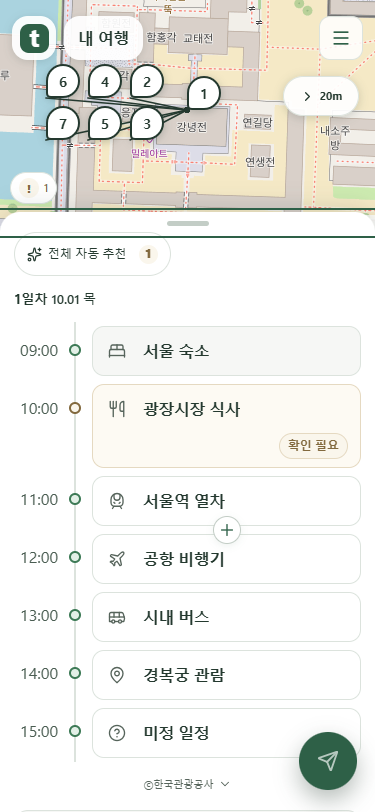
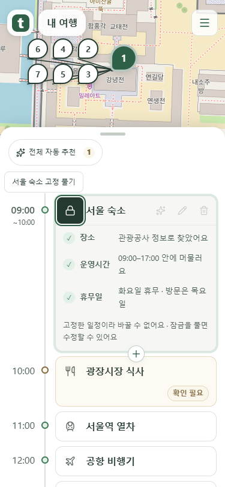
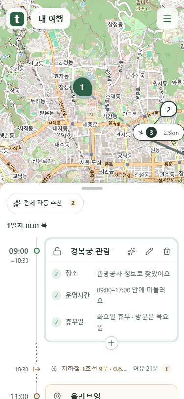
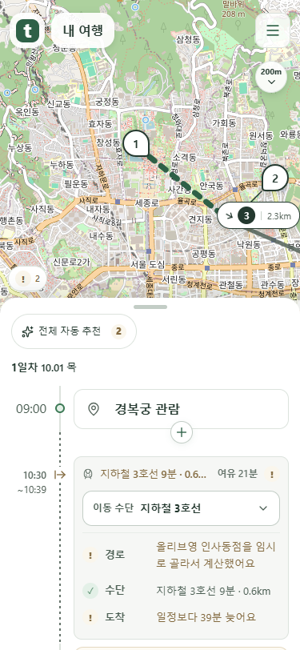

선택한 일정과 이동의 시각
2026-10-10 수정본입니다. 일정은 위 시작·아래 마무리, 이동은 위 출발·아래 도착 시각을 표시합니다.
평소에는 일정 종류 아이콘
숙박·식사·기차·비행기·버스·활동을 구분하고, 종류가 미정이면 물음표로 표시합니다.

상세를 열기 전에는 잠금 버튼이 나타나지 않습니다.
상세를 열면 잠금 버튼
제목 앞 아이콘 자리에 잠금·해제 버튼이 나타납니다. 잠근 일정은 시간과 내용을 그대로 유지합니다.

선택한 일정만 두 줄 시각
위에는 크게 굵은 시작 시각, 아래에는 작고 얇은 마무리 시각을 표시합니다. 선택을 바꾸면 부드럽게 사라집니다.

점선 양끝에 따로 붙어 있던 마무리·도착 시각은 제거했습니다.
이동도 선택하면 출발·도착 시각
작은 출발 시각은 이동 설명과 같은 높이에 유지합니다. 해당 이동을 선택하면 아래에 도착 시각이 나타납니다.

로컬 mock 서버로 촬영한 화면입니다. 이미지를 누르면 원본 크기로 볼 수 있습니다.